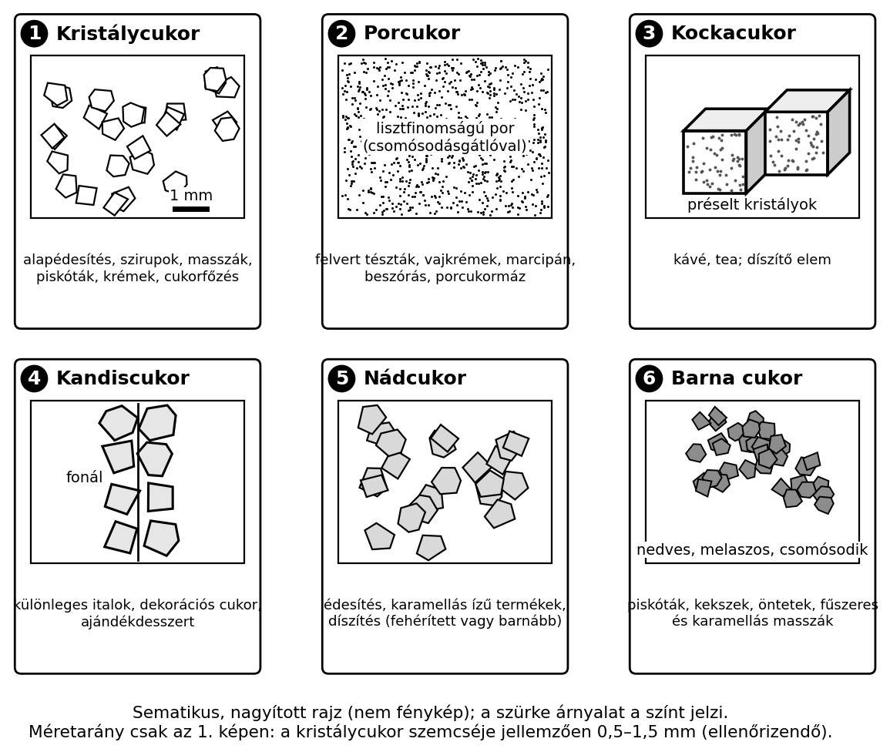
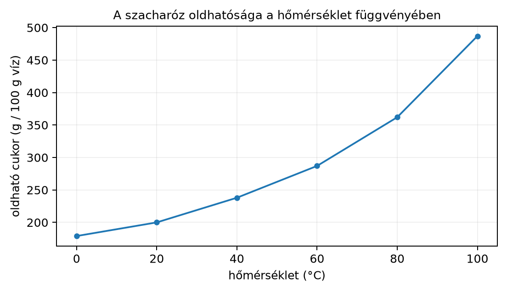

Egy cukrászüzemben a cukor nem egyszerűen „édesítő”. A cukor adja a fondán fényét, a masszák tömegét, a fagylalt fagyáspontját, a karamell színét, sőt a krémek eltarthatóságát is. Ha a tanuló csak annyit tud, hogy „cukrot teszünk a süteménybe”, akkor nem fogja érteni, miért lesz egyszer szemcsés a fondán, másszor lágy, miért ég meg a karamell, vagy miért folyik meg a cukormáz nedves időben. Ez az alfejezet a répacukor és a cukorfajták gyakorlati ismeretét adja meg: honnan származik, milyen fajtái vannak, és hogyan viselkedik a cukrásztechnológiában.
Képzelj el egy hétköznapi műhelyhelyzetet. A cukrász felforral egy cukorszirupot. A szirup lassan sűrűsödik, majd hirtelen megbarnul, és karamell illata lesz. Eközben egy másik edényben fehér porcukrot kever vajjal. A porcukor nem csomósodik, mert csomósodásgátlót tartalmaz. Egy harmadik keverőtálban kristálycukor és gyümölcspüré áll; a cukor oldódik a vízben, és a gyümölcskrém nem lesz darabos. Mindhárom jelenség ugyanarra a molekulára, a szacharózra vezethető vissza, de más-más fizikai-kémiai tulajdonsága miatt viselkedik eltérően.
Definíció. A répacukor a köznyelvben egyszerűen „cukor”. Kémiai neve szacharóz. A szacharóz egy diszacharid: két egyszerűbb cukormolekulából, α-D-glükózból és β-D-fruktózból áll. A répacukor ipari előállításának kiindulási anyaga Magyarországon elsősorban a cukorrépa (Beta vulgaris ssp. vulgaris var. altissima). A nádcukor ugyancsak szacharózból áll, de kiindulási növénye a cukornád (Saccharum officinarum). A kristálycukor gyakorlatilag tiszta szacharóz, jellemzően 99,5% feletti szacharóztartalommal; a fennmaradó rész főleg víz és nyomnyi egyéb anyag.
Szabály. A cukor a cukrászati technológiában nemcsak édesít. Fontos technológiai hatásai:
Jogszabály. A Magyar Élelmiszerkönyv és az uniós előírások meghatározzák, mi nevezhető cukornak. A „cukor” megnevezésű termékekre vonatkozó összetételi és jelölési követelményeket a Magyar Élelmiszerkönyv kötelező előírásai tartalmazzák (ellenőrizendő: az aktuális Magyar Élelmiszerkönyv-előírás megnevezése és tartalmi követelményei). A fogyasztói tájékoztatásra a 1169/2011/EU rendelet vonatkozik.
A cukorgyártás célja a növényi sejtekben tárolt szacharóz kinyerése és tisztítása.
Répacukor-gyártás lépései (vázlat):
A cukornádból hasonló elv szerint nyerik ki a szacharózt, de az ipari technológia egyes lépései (aprítás, préselés, a melasz kezelése) eltérhetnek. A fogyasztói szempontból forgalomba kerülő nádcukor lehet fehérített (tisztított) szacharóz vagy barnább, a melaszból származó anyagokat nagyobb arányban tartalmazó termék.
A cukrászati gyakorlatban leggyakrabban a kristálycukorból kiinduló fajtákat kell megkülönböztetni. A pontos összetételi követelmények és elnevezések a Magyar Élelmiszerkönyv szerint változhatnak; az itt megadott gyakorlati jellemzők tanulási célt szolgálnak.
Táblázat. Cukorfajták és jellemző felhasználásuk
| Cukorfajta | Jellemzők | Cukrászati felhasználás |
|---|---|---|
| Kristálycukor | Fehér, szabadon folyó, 0,5–1,5 mm-es kristályok (jellemző tartomány; gyártónként eltérő, ellenőrizendő) | Alapédesítés, szirupok, masszák, piskóták, krémek, cukorfőzés |
| Porcukor | Finomra őrölt szacharóz; gyakran 1–3% csomósodásgátlót (pl. kukoricakeményítőt) tartalmaz (ellenőrizendő: a csomósodásgátló típusa és maximális aránya) | Felvert tészták, vajkrémek, marcipán, beszórás, porcukormáz |
| Kockacukor | Nedvesített kristálycukorból préselt kocka | Kávé, tea; díszítő elem (pl. kandírozott díszalap) |
| Kandiscukor | Nagy, lassan növesztett kristályú cukor; gyakran fonálra vagy pálcára kristályosítva | Különleges italok, dekorációs cukor, ajándékdesszert |
| Nádcukor | Szacharóz cukornádból; lehet fehérített vagy barnább, melaszosabb | Édesítés, karamellás ízű termékek, díszítés |
| Barna cukor | Finomított nádcukor, amelyhez melaszt adnak, vagy nádból nyert kevésbé finomított cukor | Piskóták, kekszek, öntetek, fűszeres és karamellás karakterű masszák |
Megjegyzés. A „barna cukor” nem egységes fogalom. Lehet természetes módon melaszt tartalmazó nádcukor, vagy olyan finomított fehér nádcukor, amelybe újra melaszt kevernek. A pontos megnevezést a termék címkéje határozza meg; a cukrásznak tudnia kell, hogy az íze és a nedvességtartalma ettől függően eltérhet.
A cukorfajták felismerését a szemcseméret és a szín segíti: a kristálycukor szemcséi jól láthatók, a porcukor lisztfinomságú, a kockacukor préselt kristályokból áll, a kandiscukor nagy kristályokból, a nádcukor és a barna cukor színe sötétebb, a barna cukor nedves, csomósodó.

Definíció. A telített oldat olyan oldat, amelyben egy adott hőmérsékleten már nem oldódik több cukor. A túltelített oldat olyan oldat, amelyben több cukor van oldva, mint amennyit az adott hőmérsékletű telített oldat befogad; a túltelített állapot instabil, a felesleg kristályosodni képes.
Szabály. A szacharóz oldhatósága a hőmérséklettel nő. Hideg vízben is jól oldódik, de forró vízben lényegesen több cukor oldható fel. Ezért a cukorkészítmények főzésénél a magas hőmérsékletű oldat sok cukrot képes hordozni.
Összefüggés. Az oldhatóságot általában a szacharóz tömegére és a víz tömegére vonatkoztatjuk:
ahol a cukor oldhatósága, az oldott cukor tömege, a víz tömege.
Példa. Ha 100 g vízben 200 g cukor oldódik fel, akkor az oldhatóság:
A szacharóz oldhatósága 20 °C körül körülbelül 200 g szacharóz/100 g víz; 100 °C-on körülbelül 490 g szacharóz/100 g víz. A pontos értékek szakirodalmi táblázatokból keresendők (ellenőrizendő: az aktuális szakirodalmi érték).
Ábra. A szacharóz oldhatóságának alakulása a hőmérséklet függvényében

A görbe meredeksége mutatja, hogy magasabb hőmérsékleten egységnyi víz több cukrot old. Ezért a forró szirup viszonylag híg és folyós lehet, kihűlve viszont sűrű, sőt túltelített, kristályosodó rendszerré válhat.
Definíció. A kristályosodás az a folyamat, amikor az oldott anyag molekulái rendezett szilárd kristályrácsba kerülnek. A szacharózkristályok szabályos, fehér, kemény, fényes lapú szemcsék.
Mechanizmus. A kristályosodás két szakaszból áll:
Ha a túltelített oldatban sok apró góc képződik, apró, szemcsés lesz a kristályszerkezet. Ha kevés góc nő nagyra, durvább, nagyobb kristályok keletkeznek.
Szabály. A cukrásztechnikában a kristályosodás irányítása kulcskompetencia.
Definíció. A higroszkóposság a cukor vízfelvevő képessége. A cukor a környezet levegőjéből vizet képes megkötni; a porcukor különösen hajlamos a csomósodásra.
Szabály. A cukor higroszkópossága miatt:
Definíció. A karamellizáció a száraz vagy sűrű cukoroldatban lejátszódó hőbomlási folyamat, amelynek során a szacharóz kb. 160–180 °C fölött bomlik, és barna színű, sok aromavegyületet tartalmazó vegyületcsoportok keletkeznek (ellenőrizendő: a karamellizáció hőmérséklettartománya).
Technológiai szerep. A karamellizáció adja a karamell, a grillázs, a dobos cukor és a cukorfesték barna színét és jellegzetes ízét. A főzési hőmérséklet és idő pontos ellenőrzése dönti el, hogy világos aranysárga, közepes borostyán vagy sötétbarna, kesernyés lesz a karamell.
Definíció. Az inverzió a szacharóz hidrolízise: a diszacharid kötés felhasad, és a szacharózból glükóz (szőlőcukor) és fruktóz (gyümölcscukor) elegye, ún. invertcukor keletkezik.
Kiváltó tényezők. Az inverziót savak (citromsav, borkősav) és az invertáz enzim katalizálják; a magasabb hőmérséklet gyorsítja a folyamatot (a hő nem katalizátor). Cukrászati szempontból savas közeget (citromsav, borkősav, gyümölcslé) és forróságot együttesen alkalmazva az inverzió sebessége nő.
Technológiai jelentőség. Az invertcukor:
A cukrász ezt használja ki a fondán, a fagylalt és más cukorkészítmények készítésében. A pontos inverziós arányok és hőmérsékletek a receptúrától függnek.
Táblázat. A cukor technológiai hatásai és cukrászati példák
| Technológiai hatás | Mi történik? | Cukrászati példa |
|---|---|---|
| Édesítés | Az ízérzékelő receptorok aktiválódnak | Minden édes termék alapízének beállítása |
| Tömeg- és térfogatnövelés | A cukor oldott vagy szilárd tömegként hozzájárul a termék szerkezetéhez | Masszák, krémek, cukorból készült díszek |
| Tartósítás | A cukor megköti a vizet, csökkenti a vízaktivitást | Lekvár, zselé, gyümölcskészítmények, fondán |
| Állagjavítás | Az oldott cukor sűríti a folyadékot, a kristályosodó cukor rögzíti a szerkezetet | Szirupok, tükörbevonók, karamell, fondán |
| Szín- és aromaképzés | Karamellizáció, Maillard-reakció | Karamell, pirított cukor, barna tészták |
| Kelesztést befolyásoló hatás | A cukor gátolhatja a sikérháló teljes kifejlődését, és vízmegkötéssel gyengítheti az élesztő aktivitását nagy koncentrációban | Élesztős tészták; nagy cukortartalmú tésztáknál több idő vagy speciális élesztők szükségesek |
Szabály. A nagy cukortartalmú élesztős tésztákban a cukor erősen megköti a vizet, ezért az élesztő lassabban hozzáfér a vízhez. Emellett a magas cukorkoncentráció ozmotikus hatása gátolhatja az élesztősejtet. Ezért a nagyon édes kelt tésztáknál ajánlatos hosszabb kelési időt, esetleg speciális ozmo-toleráns élesztőt választani (ellenőrizendő: az élesztő anyagcseréjét gátló pontos cukorkoncentráció).
A cukor használatakor gyakran kell kiszámítani, mennyi cukrot kell hozzáadni ahhoz, hogy a kész keverék meghatározott cukortartalmú legyen, vagy mennyi víz szükséges egy adott oldhatóság eléréséhez.
Számítási feladat szerkezete: adott → keresett → képlet → behelyettesítés → eredmény → ellenőrzés.
1. példa.
Cukorszirupot készítünk. 1 kg szirupnak 60 tömegszázalékban kell cukrot
tartalmaznia. Mennyi kristálycukorra és mennyi vízre van szükség?
Adott:
Keresett:
,
Képlet:
A tömegszázalék:
Behelyettesítés és rendezés:
Ellenőrzés:
A cukor és víz összege 600 + 400 = 1000 g. ∎
2. példa.
Egy fondánrecept előírja, hogy a szirup cukor/ víz aránya 3 : 1 legyen.
Hány gramm vizet kell adni 450 g cukorhoz?
Adott:
cukor : víz = 3 : 1
Keresett:
Képlet:
Az arány alapján:
Behelyettesítés:
Ellenőrzés:
450 g cukor és 150 g víz aránya 450 / 150 = 3. ∎
3. példa (oldhatósági ellenőrzés).
20 °C-on a szacharóz oldhatósága kb. 200 g/100 g víz. Megoldhatatlan-e
az a terv, hogy 400 g vizet és 900 g cukrot 20 °C-on teljesen
feloldjunk?
Adott:
víz
Keresett:
Oldható-e 900 g cukor 400 g vízben 20 °C-on?
Képlet és behelyettesítés:
100 g víz old 200 g cukrot, tehát 400 g víz old:
Eredmény:
900 g > 800 g, tehát a cukor egy része szilárd marad. A keverék csak
melegítéssel vagy több vízzel tehető teljesen oldattá. ∎
Ez az alfejezet alapozó ismeret; a gyakorlati cukorfőzést a későbbi alfejezetekben (Cukorfőzési fokok és kézi próbák, A fondán készítése) dolgozzuk ki. Itt a cukorfajták tárolásához és bekeveréséhez kapcsolódó higiéniai lépésekre térünk ki.
Higiéniai munkakezdés. Cukros feladathoz is érvényes: munkaruha, hajháló, kezet mosni, az eszközöket és a mérleget tisztán tartani. A cukor ugyan száraz anyag, de hőkezelés nélkül kerülhet krémbe vagy masszába; ezért a porcukor és a kristálycukor is csak tiszta, száraz, idegen anyagtól mentes edénybe kerülhet.
Technológiai lap. Porcukor bekeverése vajkrémbe (tanulási célú, résztechnológia)
| Nyersanyag | Mennyiség (g) | Megjegyzés |
|---|---|---|
| Vaj (82% zsírtartalom) | 280 | szobahőmérsékletű |
| Porcukor | 185 | csomósodásgátlós, ha szükséges, átszitálva |
| Tojássárgája | 30 | pasztőrözött vagy hőkezelt |
| Vaníliapaszta | 5 | ízlés szerint 3–8 g; gyártói adagolás szerint (ellenőrizendő) |
| Összes | 500 | — |
A cukor minőségét a sütés előtt érzékszervileg és fizikailag ellenőrizzük:
Tömegellenőrzés. A kimérésnél mindig nettó tömeget mérünk; a mérleg táráját lenullázzuk.
Csomós porcukor
Tünet: a krémben cukorcsomók maradnak.
Ok: a porcukor nedvességet vett fel, vagy nem szitálták
át.
Megelőzés/javítás: a porcukrot zárható edényben, száraz
helyen tároljuk; átszitálva adagoljuk a masszába. Ha a csomós porcukor
már a krémben van, gépi habveréssel vagy rövid botmixerezéssel
segíthetünk, de a csomókat gyakran ki kell szűrni.
Szemcsés fondán
Tünet: a kész fondán érdes, durván kristályos.
Ok: a túltelített szirupban nem apró, hanem nagy
kristályok képződtek; az oldat nem tartalmazott elég kristálygátlót (pl.
glükózszirupot).
Megelőzés/javítás: a fondánrecept előírja a megfelelő
arányú glükóz- vagy invertcukor-adagolást; a hűtési és keverési
hőmérséklet betartása is szükséges.
Égett karamell
Tünet: a karamell sötétbarna, keserű.
Ok: a főzés alatt a hőmérséklet túl magas volt, vagy a
tűzhelyen tovább főzték a kívánt színnél.
Megelőzés/javítás: a karamellfőzést 160–180 °C
tartományban, folyamatos ellenőrzéssel végezzük; a cél szín elérésekor
azonnal félrehúzzuk az edényt (ellenőrizendő: a recept által előírt
hőmérséklettartomány).
Egy cukrászatban a tulajdonos azt tapasztalja, hogy a marcipános sütemények masszája ragacsos, a porcukor beszórása után a felület csomós. A dolgozók úgy gondolták, hogy a cukor rossz. A hibaelemzés során kiderül, hogy a porcukrot a mosogató feletti nyitott polcon tárolták, ahol a konyhai gőz nedvesítette. A porcukor csomósodni kezdett, és a masszába keverve szemcsés maradt. A megoldás: a porcukrot áthelyezték zárt, száraz tárolóba, a megnyitott csomagot pedig lezárták; a csomós tételt selejtezték. A tanulság: a cukor nem „rossz” attól, hogy higroszkópos; a tárolási körülményeknek megfelelőnek kell lenniük.
1. feladat (A).
Sorold fel a legfontosabb cukorfajtákat, és írd le röviden, mire
használjuk őket.
2. feladat (A).
100 g vízben 180 g szacharózt oldunk. Mennyi az oldhatóság értéke g/100
g vízben?
3. feladat (B).
Saját őrlésű porcukrot készítünk úgy, hogy összetétele egyezzen a bolti,
3 % csomósodásgátlót tartalmazó porcukoréval. Hány gramm kristálycukrot
és hány gramm csomósodásgátlót mérjünk ki 300 g porcukorhoz?
4. feladat (B).
Cukorszirupot készítünk 2 kg nettó tömegre, 65% cukortartalommal. Mennyi
cukrot és vizet mérjünk?
5. feladat (C).
Egy tanuló sűrű, forró szirupot keverget, és azt veszi észre, hogy a
folyadék elcukrosodik, szemcsés lesz. Milyen okokra gyanakodhat? Milyen
kristályosodást akadályozó anyagot adhat a receptúra? Hogyan
befolyásolja az invertcukor a termék puhaságát?
6. feladat (D).
Készíts otthon egyszerű porcukros vajkrémet a Gyakorlati
útmutató lapja szerint, de a tojássárgáját
pasztőrözött/hőkezelt termékből használd. Jegyezd fel, hány percig
keverted, milyen hőmérsékletű volt a vaj, és mi lett a végeredmény
állaga. Értékeld a krém simaságát, csomómentességét.
Önellenőrzés – válaszok
1. feladat megoldása
Kristálycukor (szirup, gyümölcs, masszák), porcukor (krémek, beszórás),
kockacukor (forró italok), kandiscukor (díszítés), nádcukor (édesítés,
karamellás íz), barna cukor (piskóta, keksz, fűszeres masszák).
2. feladat megoldása
.
∎
3. feladat megoldása
A 300 g porcukor 3%-a csomósodásgátló:
.
A szacharóz tömege:
.
Tehát ha kristálycukorból készítjük a porcukrot, 291 g kristálycukrot
kell finomra őrölni és 9 g csomósodásgátlóval keverni. ∎
4. feladat megoldása
,
.
.
.
Ellenőrzés: 1300 + 700 = 2000 g. ∎
5. feladat megoldása
Ok: a szirup túltelített lett, és nem volt elég kristálygátló anyag a
rendszerben. A hiányzó glükóz vagy invertcukor miatt a
szacharózkristályok idő előtt kiváltak. A recept előírhat 15–30%
glükózszirupot vagy kis mennyiségű savat az inverzióhoz (ellenőrizendő:
a pontos receptúra). Az invertcukor higroszkópos, ezért a termék puhább
marad.
6. feladat megoldása
A gyakorlati feladat értékelése: a krém legyen egynemű, csomómentes,
fényes, könnyű. Jó volt, ha a vaj puha (kb. 18–22 °C), a porcukor
átszitált, a tojássárgája hűtött, pasztőrözött. Hibás, ha csomós, vagy
ha a vaj túl kemény, túl puha, és a krém kicsapódik. A kész krémet 5 °C
alatt, fedve tárold (ellenőrizendő: a hatályos élelmiszerbiztonsági
útmutató szerinti hűtési hőmérséklet).
A répacukor a cukrászat alapvető édesítője és állagformálója. Kémiai neve szacharóz; a répából és a nádból nyert cukor is szacharózból áll. A gyakorlatban megkülönböztetjük a kristálycukrot, porcukrot (csomósodásgátlóval), kockacukrot, kandiscukrot, nádcukrot és barna cukrot. A cukor technológiai hatásai közé tartozik az édesítés, a tömegnövelés, a tartósítás (a vízaktivitás csökkentése), az állagformálás, a szín- és aromaképzés, valamint az élesztő aktivitásának befolyásolása nagy koncentrációban. A szacharóz oldhatósága a hőmérséklet emelkedésével nő: 20 °C-on kb. 200 g/100 g víz, 100 °C-on kb. 490 g/100 g víz (tájékoztató értékek). A telített oldat már nem tud több cukrot feloldani; a túltelített oldat instabil, kristályosodhat. A kristályosodás fontos a fondán és más cukorkészítmények készítésénél. A sav és hő hatására bekövetkező inverzió glükózt és fruktózt ad; az invertcukor gátolja a kristályosodást, és higroszkópos terméket ad. A cukor higroszkópossága miatt száraz helyen, zárható edényben tárolandó. Továbbvitt eredmények: Az oldhatóság, a túltelítettség és az inverzió elveit használjuk a Cukorfőzési fokok és kézi próbák, a Cukorszirupok sűrűsége: Baumé-fok, refraktometria és Brix, valamint a Fondán, marcipán, nugát és egyéb édesipari félkész termékek alfejezetekben. A fagylaltkeverék fagyáspontjának és édességének számításához is ugyanez a cukorfizika kell (Fagylaltkeverék-számítás: szárazanyag, cukor, zsír, édesség és fagyáspont).
Az alfejezet a cukorkémiai és cukrásztechnológiai alapok (szacharóz oldhatósága, kristályosodás, karamellizáció, inverzió, higroszkóposság) stabil, általánosan ismert tananyagát használja. A konkrét oldhatósági adatok szakirodalmi táblázatokból pontosíthatók (ellenőrizendő: a szacharóz oldhatósági táblázata 0–100 °C tartományban). A porcukor csomósodásgátlójának típusa és maximális aránya a Magyar Élelmiszerkönyv és a vonatkozó adalékanyag-előírások szerint ellenőrizendő (ellenőrizendő: a porcukor összetételére vonatkozó aktuális élelmiszerkönyvi előírás és adalékanyag-engedélyezés). A karamellizáció hőmérséklettartománya (kb. 160–180 °C) a szakirodalomban kissé eltérő lehet; a vizsgán a recepthez és a tanult elmélethez igazodó értékeket használd (ellenőrizendő: a karamellizáció kezdeti hőmérséklete). A higiéniai tárolási hőmérsékletek és idők továbbra is a hatályos NÉBIH-útmutatók és jogszabályok szerint ellenőrizendők.